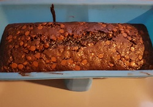

Schokokuchen
Backzeit: 30-40 min
Zubereitungszeit: 10 min

- 100g Butter
- 200g Zucker
- 1Pck VanilleZucker
- 50g Backkakaopulver
- 3 Eier
- 75g Mehl
- optional zum drüberstreuen: Schokosplitter/Kuvertüre
- Ofen auf 180°C vorheizen, Butter schmelzen und mit Zucker, Vanillezucker und Kakao mischen.
- Eier unterrühren, Mehl dazu geben und gut verrühren.
- Teig in eine (Silikon-)Kastenform geben und bei Ober-/Unterhitze ca. 30-40 min backen.